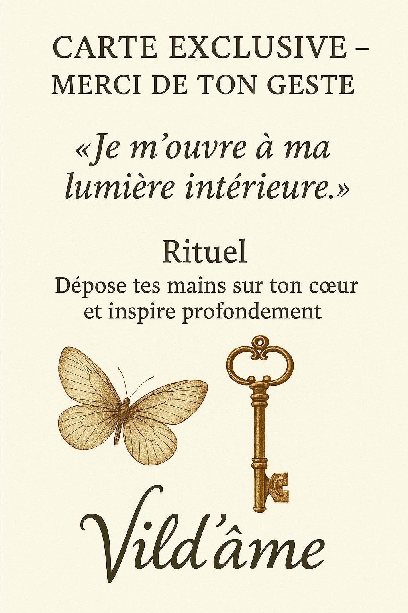

div style="max-width: 400px; margin: 2rem auto; padding: 2rem; background-color: #fffaf7; border-radius: 16px; box-shadow: 0 6px 20px rgba(0, 0, 0, 0.08); font-family: Georgia, serif; color: #3b2f2f; text-align: center;">
CARTE EXCLUSIVE –
MERCI DE TON GESTE
« Je m’ouvre à ma lumière intérieure. »
Rituel
Dépose tes mains sur ton cœur
et inspire profondément.

Télécharge ta carte :
Télécharger le PDF